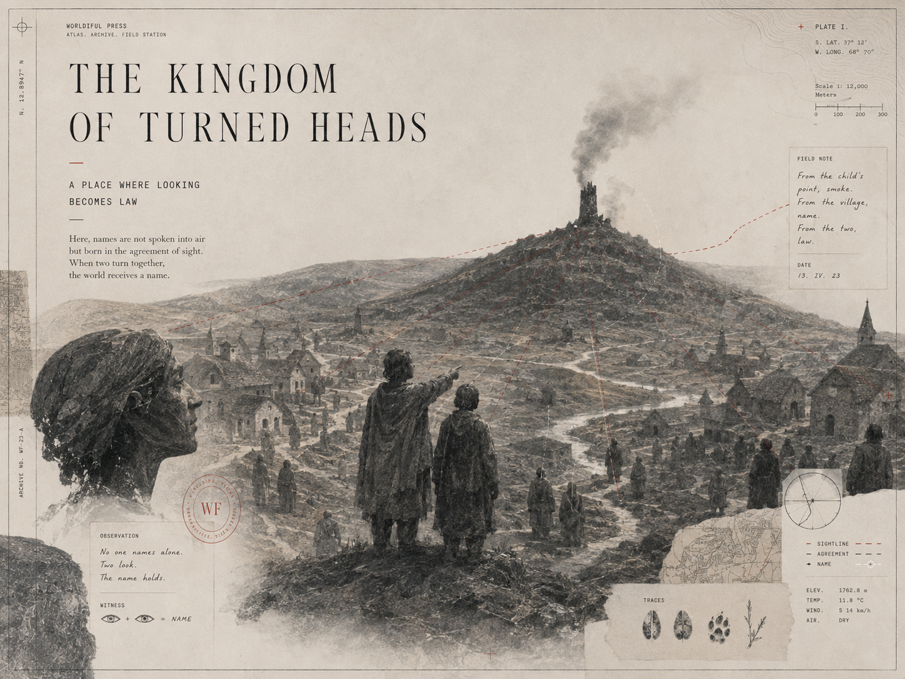

The Kingdom of Turned Heads
The Politics of Deixis and the Monopoly of Attention

Key Poses & Onion-Skin Inspection (`DRAW → LOOK → COMPARE → ADJUST`)
Click any keyframe below to scrub the multiplane camera directly to that story beat.


Director's Craft Notes (Picture · Sound · Code · Lineage)
Picture (Multiplane Staging)
A smoking watchtower on a distant ridge (Plane 5) and villagers in the foreground (Plane 2). When the boy points, the villagers look at his knuckle until he physically turns a head; red dashed sightlines then converge on the smoke.
Sound (Kokoro & Procedural Foley)
Crackling distant pine fire, a sharp slap/turn of the helmet, wind across the valley, and a unison choral chord when all heads align.
Code (Structural Invariant)
pointer != referent. Dereferencing failure occurs when the observer consumes the finger instead of following the ray to the target.
Lineage (Chapter Transition)
In The Crossing, a trace on the ground moved a body. Here, a raised finger moves another creature's eyes before a single noun exists.
Exposure Sheet (X-Sheet) & Fulcrum Line Breakdown
| Frames / Time | Shot / Room | Dialogue & Kokoro Voice Performance (Click to Seek) | Foley Cues | Multiplane Camera Choreography | Planes |
|---|---|---|---|---|---|
| F0000–F0364 0.0s–15.2s |
ESTABLISH room: square |
Archivist (bf_emma): “In a valley where everyone watched only their own boots, a boy saw smoke rising behind the ridge. He had no word for fire. He simply pointed.” [1.2s] The Artisan (am_adam): “Why is the boy holding his finger in the air?” [11.9s] |
smoke@0.5s, point@2.0s | Multiplane Lateral Truck (establish) | P0..P6 |
| F0364–F0460 15.2s–19.2s |
TITLE room: square |
(Visual Multiplane Hold & Surveyor Music Box Motif) |
ambient bed | Multiplane Lateral Truck (title) | P0..P6 |
| F0460–F0791 19.2s–33.0s |
ACTION room: square |
Archivist (bf_emma): “The boy walked over, took the man's head in both hands, and turned his neck toward the mountain.” [20.3s] The Child (bf_lily): “Do not look at where my finger begins. Look at where it ends.” THE LINE [27.2s] |
turn_head@0.8s, sightline@2.6s | Push-In 1.28× + Fulcrum Vignette Hush (-8.5 dB) | P0..P6 |
| F0791–F1098 33.0s–45.7s |
FULCRUM_TURN room: hall |
The Sovereign (am_onyx): “In the Kingdom of Turned Heads, the court eventually outlawed unlicensed pointing.” [34.2s] The Sovereign (am_onyx): “Whoever owns the pointer owns the room.” THE LINE [41.3s] |
fireworks@1.2s | Push-In 1.28× + Fulcrum Vignette Hush (-8.5 dB) | P0..P6 |
| F1098–F1259 45.7s–52.4s |
CONSEQUENCE room: square |
Archivist (bf_emma): “The first battle of power is never what things mean, but what people are forced to look at.” [47.0s] |
stamp@1.4s | Multiplane Lateral Truck (consequence) | P0..P6 |
| F1259–F1350 52.4s–56.2s |
END room: square |
(Visual Multiplane Hold & Surveyor Music Box Motif) |
ambient bed | Multiplane Lateral Truck (end) | P0..P6 |
Multiplane Camera Depth Stack (`screen_motion ∝ camera_motion / layer_depth`)
| Plane | Depth | Layer Assignment | Differential Parallax Behavior |
|---|---|---|---|
| PLANE 0 | d = 0.00 | CAMERA MASK / ARCHIVAL PLATE FRAME | Fixed to lens (0.0x); double-ruled plate border, reticles, TRACE SPECIMEN, FIELD NOTE, WF stamp, & Fulcrum vignette |
| PLANE 1 | d = 0.72 | EXTREME FOREGROUND OCCLUSION | 1.39x camera motion; silhouetted switchgrass, timber posts, or stone pilasters crossing lens |
| PLANE 2 | d = 1.00 | PRIMARY CHARACTER ACTION | 1.00x camera motion; inside-out articulated characters, 24fps Kokoro lip-sync, & callout boxes |
| PLANE 3 | d = 1.25 | SECONDARY ACTION & PHYSICAL TRACES | 0.80x camera motion; chapter trace specimen, apparatus, & animated red dashed sightlines |
| PLANE 4 | d = 1.80 | MIDGROUND TERRAIN & ARCHITECTURE | 0.56x camera motion; stage-specific terrain, towers, alcoves, & cross-hatched ink slopes |
| PLANE 5 | d = 3.20 | DISTANT BACKGROUND & LITHOGRAPHIC PLATE | 0.31x camera motion; full-bleed archival plate atmosphere & distant mountain/vault horizon |
| PLANE 6 | d = 6.00 | SKY / CELESTIAL TOPOGRAPHY | 0.17x camera motion; warm archival parchment wash & surveyor contour rings |